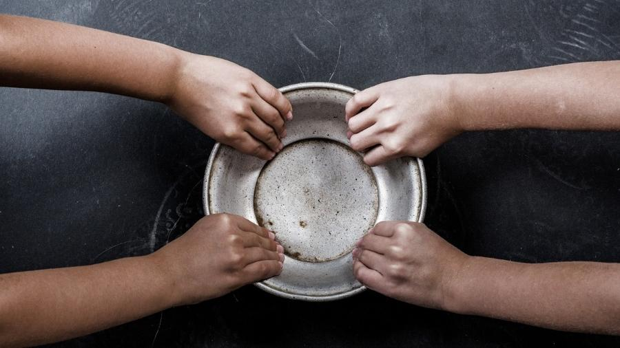

A fome, de acordo com a definição da FAO (Organização das Nações Unidas para a Alimentação e Agricultura), é a sensação de desconforto causada pela ingestão insuficiente de nutrientes essenciais para o funcionamento do corpo humano.
A fome global é um problema persistente, caracterizado pela desigualdade histórica no acesso aos alimentos. Mesmo com avanços notáveis, como o aumento da produção de alimentos em escala mundial, a fome continua a ser uma preocupação atual. Suas causas incluem questões econômicas, como desemprego e inflação, fatores políticos, como conflitos militares, e desastres naturais, como catástrofes climáticas.
Além da desigualdade na distribuição de renda, a disparidade na distribuição global de alimentos resulta em escassez em várias regiões. Isso é agravado por outras questões, como o desperdício e o modelo de produção agroexportador predominante em muitos países, incluindo o Brasil. Nesse modelo, grande parte do que é cultivado é direcionado para processamento em outros territórios, sendo que, em alguns casos, esses produtos são utilizados para fins diferentes da alimentação direta, como a produção de óleos e ração animal.
Para saber mais sobre nossa proposta assista também ao nosso Pitch: https://www.youtube.com/watch?v=o621uu-9DAU